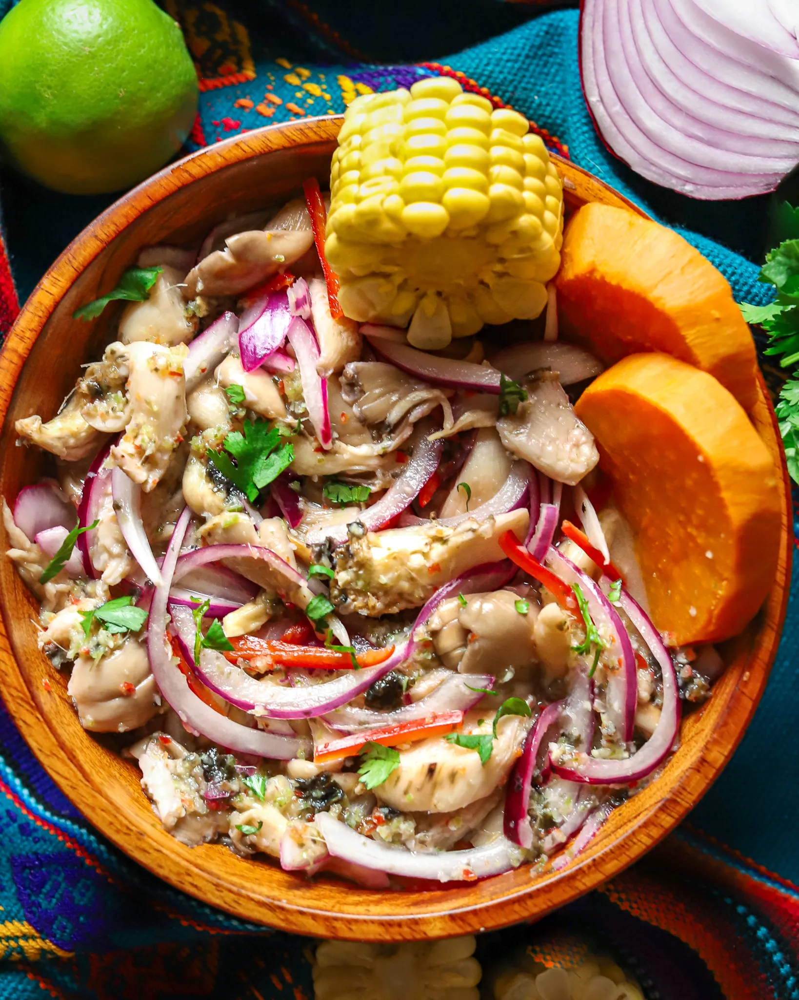

É com imensa alegria que damos as boas-vindas a todos vocês ao nosso blog de receitas Peruana. Aqui, vocês encontrarão um pedacinho do coração do Peru em forma de deliciosas receitas que celebram a diversidade e a riqueza da nossa culinária.
Ceviche
O ceviche é um prato tradicional da culinária peruana feito com peixe cru ou frutos do mar, marinados em suco de limão ou limão-da-pérsia. Os ácidos cítricos do suco de limão "cozinham" os frutos do mar, tornando-os seguros para consumo. O ceviche é geralmente temperado com cebola, pimenta, coentro e especiarias, proporcionando um sabor refrescante e picante. É frequentemente servido com batata-doce e milho cozido. Este prato é conhecido por seu contraste de sabores e texturas, sendo uma iguaria fresca e deliciosa.
Ingredientes
- 500g de peixe branco fresco, cortado em cubos
- 1 cebola roxa, finamente fatiada
- 1 pimenta aji amarelo (ou outra pimenta picante a gosto), finamente picada
- 1/2 xícara de suco de limão fresco
- Sal e pimenta-do-reino a gosto
- Coentro fresco picado a gosto
- 1 dente de alho, picado (opcional)
- Milho cozido (opcional)
- Batata-doce cozida e cortada em rodelas (opcional)
Modo de preparo
- Em uma tigela grande, coloque os cubos de peixe e adicione o suco de limão, misturando bem para cobrir o peixe. Deixe marinar na geladeira por cerca de 20-30 minutos até que o peixe fique opaco.
- Enquanto o peixe está marinando, prepare a cebola fatiada e a pimenta aji amarelo (ou a pimenta de sua escolha).
- Após a marinada, escorra o excesso de líquido do peixe.
- Misture o peixe marinado com a cebola roxa, a pimenta picada e o coentro. Adicione sal e pimenta a gosto. Se preferir, adicione o alho picado neste momento para mais sabor.
- Sirva o ceviche em pratos individuais, decorando com milho cozido e batata-doce, se desejar.
Tabela Nutricional do Ceviche
| Componente | Quantidade |
|---|---|
| Calorias | 200 kcal |
| Proteínas | 20g |
| Carboidratos | 10g |
| Gorduras Totais | 8g |
| Gorduras Saturadas | 2g |
| Fibras | 3g |
| Açúcares | 2g |
| Sódio | 500mg |